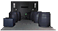
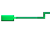
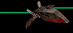
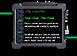
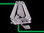
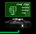

|
|  |
VOCs are the sounds that you hear in the background, the sound of a blaster or detonator, a door opening, or somebody talking. In short any sound you hear in Dark Forces is a VOC file(except for the MIDI music). Here you can find some files of new sounds created for use in Dark Forces levels. Almost all of these VOC files can also be found at MagicAl's Dark Forces Niche.
| Levels A-L | Levels M-Z | 3DOs | BMs | FMEs | Patches | VOCs | WAXes |
| alsbgtxt.zip (6k) | Creator: Allen Newman | |
| alsbgvoc.zip (1M) | Creator: Allen Newman | |
| alskjtxt.zip (10k) | Creator: Allen Newman | |
| alskjvo1.zip (1004k) | Creator: Allen Newman | |
| alskjvo2.zip (906k) | Creator: Allen Newman | |
| atatstep.zip (9k) | Creator: Allen Newman | |
| bactatnk.zip (16k) | Creator: Allen Newman | |
| bespcell.zip (23k) | Creator: Allen Newman | |
| cantband.zip (95k) | Creator: Allen Newman | |
| crbfrez1.zip (41k) | Creator: Allen Newman | |
| crbfrez2.zip (37k) | Creator: Allen Newman | |
| creak.zip (80k) | Creator: Lionel Fouillen | |
| dagobah.zip (72k) | Creator: Allen Newman | |
| dethstar.zip (27k) | Creator: Allen Newman | |
| dethstr1.zip (34k) | Creator: Allen Newman | |
| dethstr2.zip (70k) | Creator: Allen Newman | |
| droid.zip (28k) | Creator: Lionel Fouillen and Vincent Hubin | |
| dsplans.zip (39k) | Creator: Allen Newman | |
| echobase.zip (87k) | Creator: Allen Newman | |
| endor1.zip (64k) | Creator: Allen Newman | |
| endor2.zip (18k) | Creator: Allen Newman | |
| ewoksng1.zip (80k) | Creator: Allen Newman | |
| ewoksng2.zip (84k) | Creator: Allen Newman | |
| ewoktalk.zip (107k) | Creator: Allen Newman | |
| garage.zip (7k) | Creator: Allen Newman | |
| infirmry.zip (14k) | Creator: Allen Newman | |
| laptink1.zip (99k) | Creator: Allen Newman | |
| laptink2.zip (118k) | Creator: Allen Newman | |
| mfincave.zip (19k) | Creator: Allen Newman | |
| thunder.zip (82k) | Creator: Lionel Fouillen | |
| yavinfst.zip (60k) | Creator: Allen Newman | |
| Levels A-L | Levels M-Z | 3DOs | BMs | FMEs | Patches | VOCs | WAXes |
|  |  |  |  |  | ||